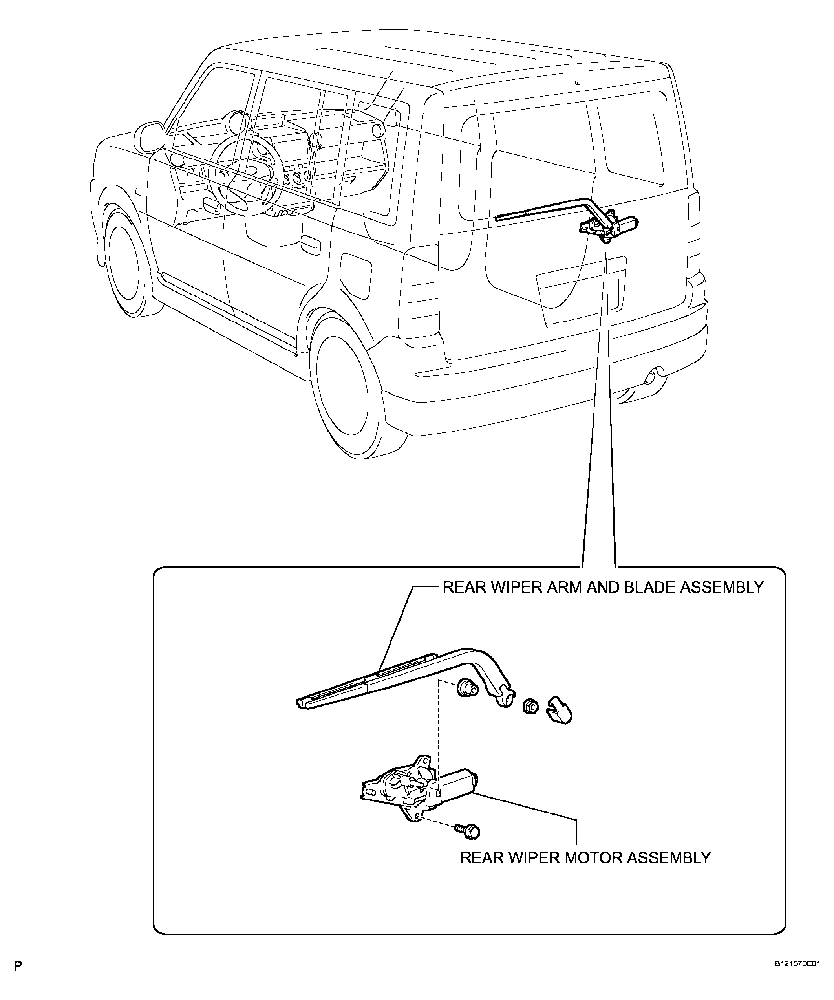

Home
>>
Scion
>>
2006
>>
xB Standard
>>
Repair and Diagnosis
>>
Accessories & Equipment
>>
Wiper/Washer Systems
>>
Wiper & Washer
>>
Rear Wiper Motor
>>
Components
Rear Wiper Motor: Components
Fig 1: Identifying Rear Wiper Motor Components

Courtesy of © TOYOTA, LICENSE AGREEMENT TMS1002